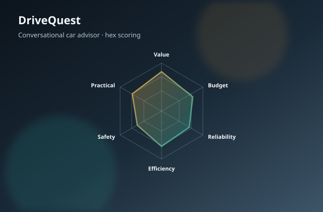

Open source · FastAPI · LangChain · Docker
DriveQuest
End-to-end conversational car advisor: quest-style intake, hexagonal multi-axis scoring, EV tradeoffs, ROI break-even, scrapers, and a multi-tenant dealer-group embed with inventory ingest.
- Full stack: FastAPI backend, modern static UI, agent layer, catalog data
- Ops-ready: Docker image, demo mode without an API key, POC runbook
- Dealer plugin: group/location scope, CSV/Excel ingest, embed snippet